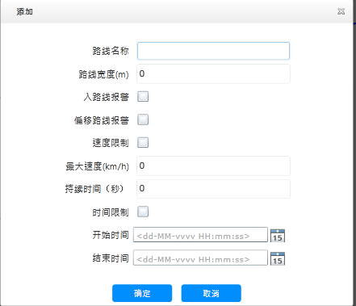

添加行驶路线
添加新的行驶路线：设置进出行驶路线报警类型、速度控制规则以及规则控制时间段。
| 1. | 在行驶路线主界面的信息列表上方，单击〖〗，打开“添加”窗口，如下图所示。

Fig 63 添加行驶路线 |
| 2. | 输入电子围栏的“路线名称”与“路线宽度”。 |
| 3. | 选择围栏告警类型，勾选“入路线报警”或“偏移路线报警”。
|
| 4. | （可选）设置车辆行驶速度限制。具体参见 添加电子围栏。 |
| 5. | （可选）设置车辆的行驶控制时间段。具体参见 添加电子围栏。 |
| 6. | 单击〖确定〗，完成行驶路线信息添加，系统弹出提示信息。 |
| 7. | 单击〖确定〗，使用鼠标在GIS地图区绘制行驶路线。绘制完成后使用鼠标左键双击结束行驶路线绘制，系统弹出增加路线信息的提示对话框。
绘制行驶路线时，节点的个数不能超过34个。
|
| 8. | 单击〖确定〗。 电子围栏列表中新增一条行驶路线的记录信息。
|